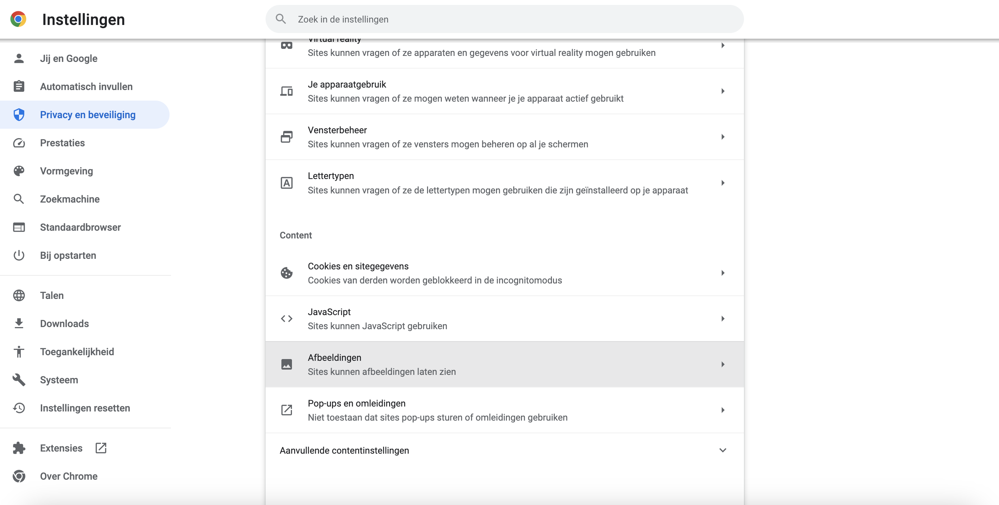
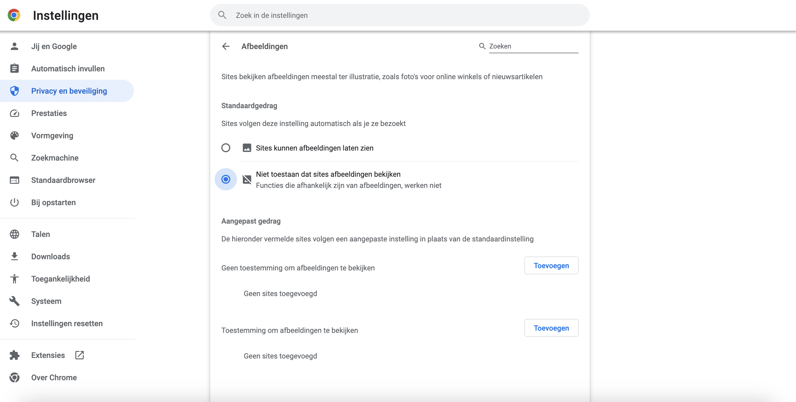
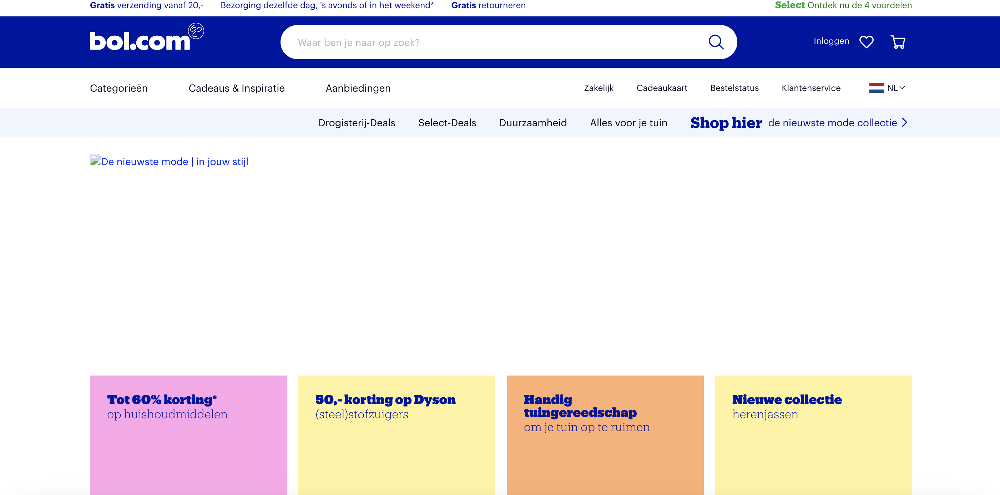

Je kan je trackpad uitschakelen in je instellingen van je mac. Het eerst wat mij opvalt, is dat je wordt beperkt bij het gebruik van de website: Zonder de muisaanwijzer kun je niet meer navigeren of klikken op links en knoppen op de website. Dit kan het gebruik van de website ernstig beperken of zelfs onmogelijk maken.
Je kan gebruik maken van toetsenbordalternatieven om dit probleem op te lossen. Sommige websites bieden alternatieve manieren om te navigeren en klikken met behulp van het toetsenbordtoetsen, denk aan de pijltjestoetsen, je spatiebalk of de tab-toets. Hierdoor focus je op een element, deze state kan je ook stylen is CSS. Als je je trackpad/muis uitzet, dan kun je deze alternatieven gebruiken om toch te kunnen navigeren en klikken op de website.
Een problemeen die ik ben tegengekomen is dat sommige links waar doorheen getabt kan worden, niet zichtbaar in beeld zijn. Menu's blijven vaak dichtgeklapt terwijl je er wel met tab doorheen kan gaan, op deze manier heb je dus visueel geen idee waar je op klikt. Het enige voordeel is dat het minder vermoeiend is voor je handen. Als je je trackpad/muis uitzet, kan dit een manier zijn om vermoeidheid of pijn in de handen of polsen te verminderen. Dit kan vooral handig zijn als je veel tijd doorbrengt op de computer.
Je kunt alle afbeeldingen in je browser uitzetten door in Chrome naar instellingen te gaan, privacy en beveiliging, vervolgens op afbeeldingen te klikken en dan "niet toestaan dat sites afbeeldingen bekijken" aanzetten.
 Ten eerste heeft de website een snellere laadtijd. Afbeeldingen zijn vaak grote bestanden en zorgen er daarvoor dat het laden langer duurt. Het uitzetten van afbeeldingen heeft dus een voordeel, vooral als je een trage internet verbinding hebt. Het uitzetten van afbeeldingen heeft nog een voordeel, het zorgt voor minder tracking. Afbeeldingen worden soms gebruikt voor het bijhouden van gebruikersgedrag op de pagina. Als je afbeeldingen uitschakelt, zal dit soort tracking niet meer werken. Dit kan voordelen hebben voor de privacy, maar kan er ook voor zorgen dat sommige functionaliteiten van de website niet meer werken. Het nadeel is dus dat vaak ene deel van de styling er aan gaat. Maar ook dat er een stuk context kan missen, afbeeldingen hebben namelijk niet alleen een decoratieve functie, maar kunnen ook context bieden. Als deze context weg valt kan het dus zo zijn dat een website onbegrijpelijk wordt. Zet dus nooit belangrijke tekst in een afbeelding! Een oplossing voor dit probleem is een alternatieve tekst (alt tekst). Deze levert de ontbrekende context en zorgt er dus voor dat je website weer begrijpelijk wordt.
